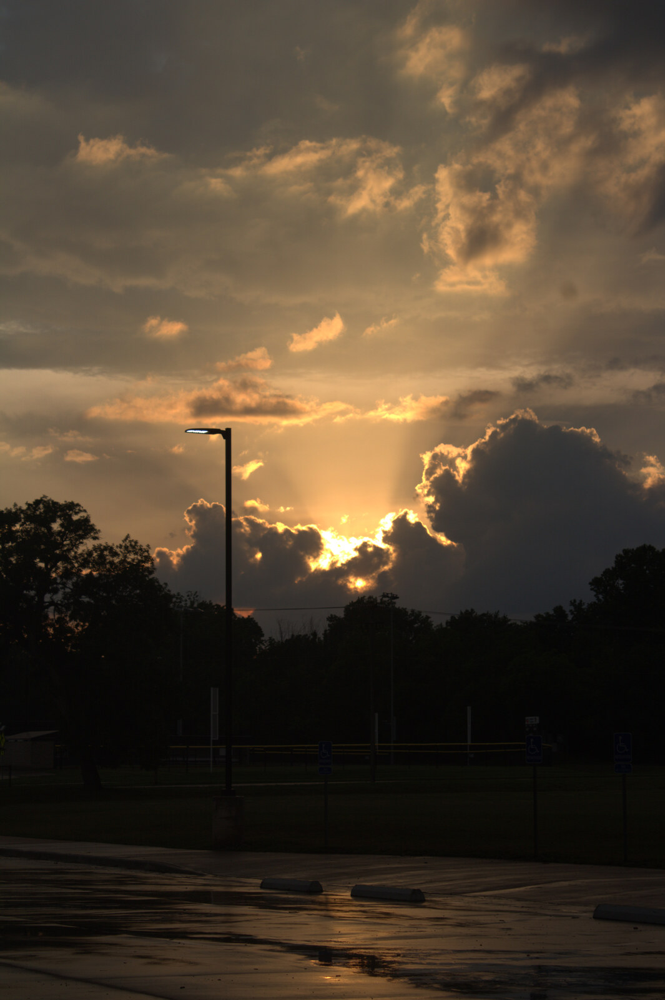
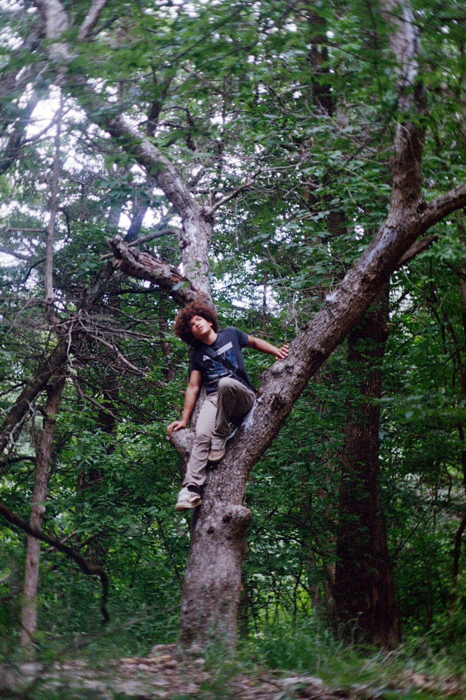
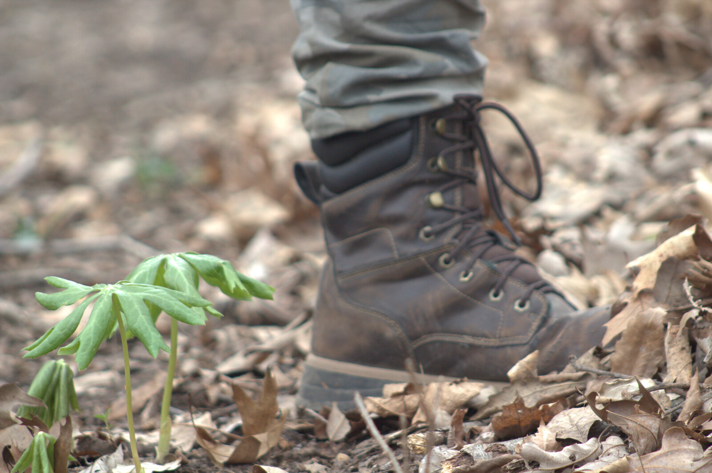
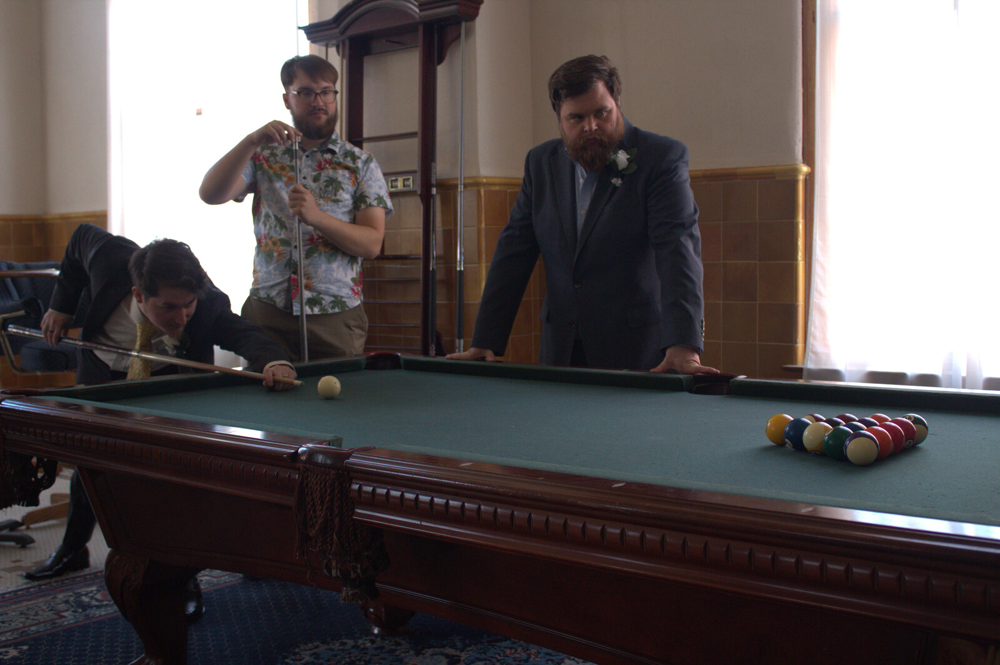
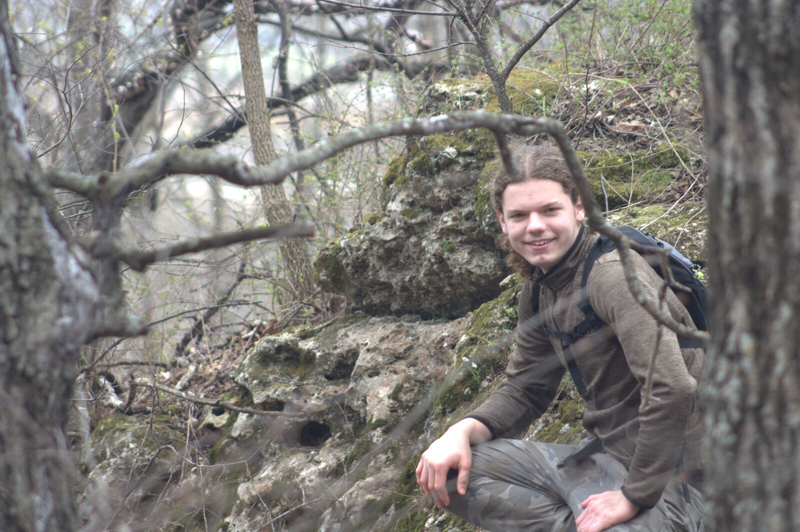
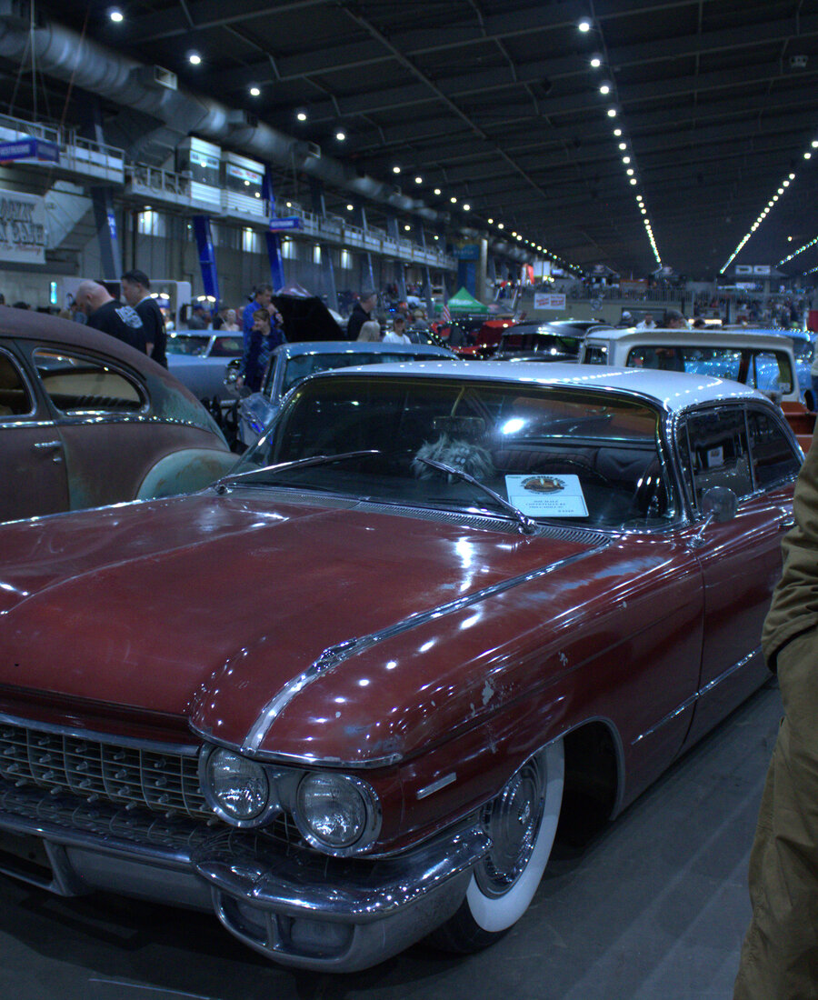
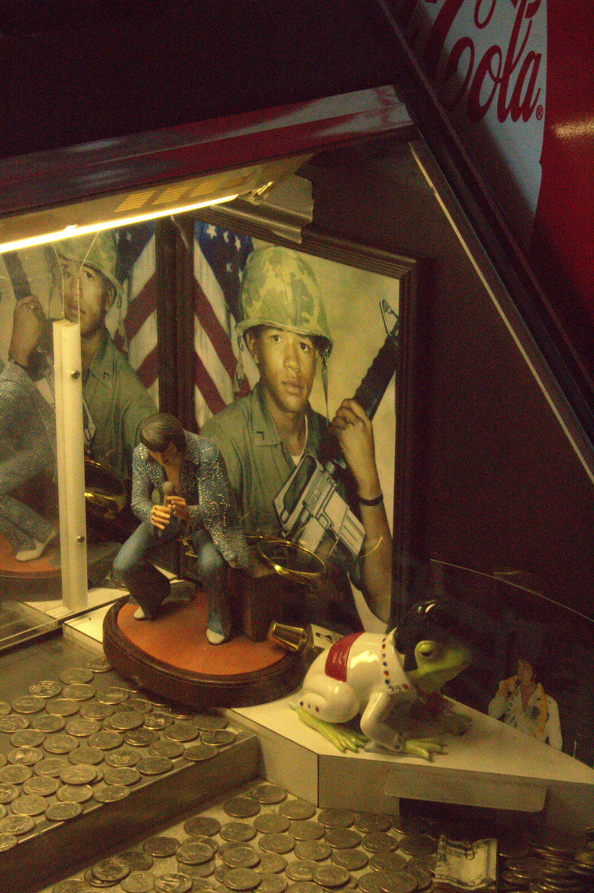
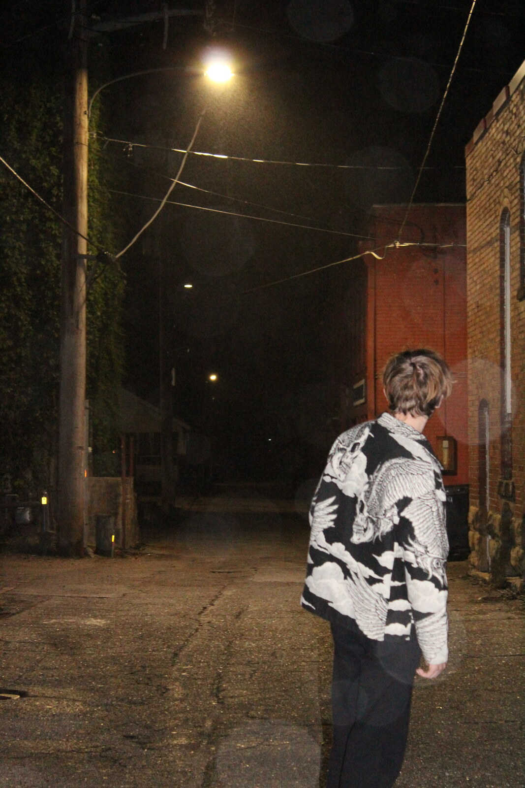

Selected Work
10 Frames
Kansas Sky, Dusk01/10

Up the Old Oak02/10

First Steps of Spring03/10

Elk City Understory04/10
Daylily05/10

After the Ceremony06/10

Trailside07/10

Show Floor08/10

Two Bits a Turn09/10

Back Alley, Midnight10/10